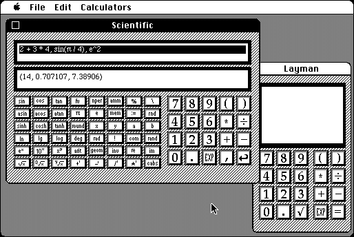

Download
extended_calc_2.03.zip (106K) Extended Calculator 2.03 repackaged into a zipped hfs disk image and checksum file. The disk image can be mounted with Mini vMac.
extended_calculator_2.03.sit (106K) Extended Calculator 2.03 in the original format.
copyright: Niklas Frykholm
mod date: Mar 10, 1997
license: shareware
from url :
Extended Calculator
Four calculators in one program: "Layman", "Scientific", "Graph", and "Programmable".

If you find these downloads useful, please consider helping the Gryphel Project, which hosts them.
Here are the md5 checksums for the downloads, signed with Gryphel Key 5:
--------- GRY SIGNED TEXT --------- a093e1cdb637cb8249f511da1ed6f803 extended_calc_2.03.zip bf23459a0fc93ad08e0b701c1a9f4916 extended_calculator_2.03.sit ------- BEGIN GRY SIGNATURE ------- Gry/4Xa8CFcUzxdN/D4FfYIrO3yID07kv1u77qTffv76VmK/GoHVcIlrT8K8WKkN a0CjtMv/fEEVzRBP3Fb28owd4GzADalyoP6EYXh6RmTxNi5ScPkIpNwa+eX8dz4R ECtYD+WZIJuq1ZD+pUV/8kApW8XOc+OEUYsJx2TymeDzg/s1re9AJ7EqqIg8G14I -------- END GRY SIGNATURE --------